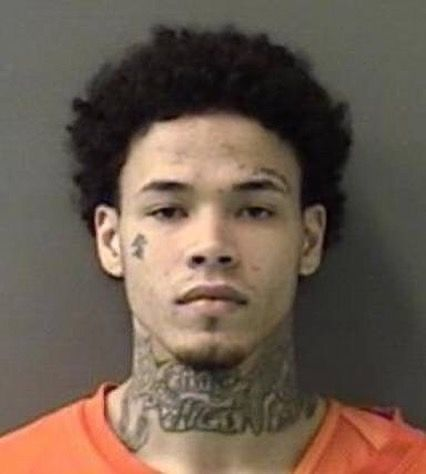

Em uma cidade da Polôia chamada Varsóvia, o detetive Markus,
investigava um caso de homicídio em uma casa da família mais rica da cidade. Antes de sua aposentadoria no final de 2010.
Já fazem 15 anos desde a última investigação já feita, o caso parou. Agora esse mistério está nas suas mãos...
Para concluir o mistério, você deverá coletar provas em diversos elementos e lugares reconhecidos da vitima.
Se atente a minimos detalhes, tudo é importante.
Ainda há alguns suspeitos, tais como individuos que eram próximos ou que se interligam a provas, sem um álibi ou provas de defesa.
Érika Novak, irmã da vítima desaparecida.

Scott Clark, ex-namorado de Julia Novak.
Não identificado
A LIGAÇÃO- 2008
20:17 alguém liga para o escritório do Dr. Markus, um desaparecimento suspeito é deportado. Uma voz feminina assustada e ofegante.
"Alô?! Detetive, gostaria de deportar o desaparecimento da... Ahem, de uma pessoa... Julia Novak. Já fazem 24 horas e
ninguém soube seu paradeiro... Estou preocupada." -???
"Gostaria de me informar seu nome? iria ajudar, e muito, na investigação... Senhora?! Ainda está na linha."
"Eu não posso... eu não posso! Tenho que desligar. O Scott não pode sonhar que ela sumiu dessa forma."
17-12-2008 - APENAS O COMEÇO
A pessoa nunca mais retornou, o Detetive iniciou uma investigação complexa porém sem muitas pistas ou
suspeittos para seguir. Buscas foram feitas na casa mais usada pela família. Apenas caixas, poeira e móveis milionários.
As opções foram acabando, não parecia mais ser tão óbvio, chegou a hora de investigas locais públicos e invadir -legalmente-
câmeras de segurança. Julia foi vista entrando no parque. Ótimo recomeço!
2009- MEMÓRIAS MORTAS
Depois de encontrar a peça principal do mistério, o corpo de Julia. Markus doente e fraco, o caso estava em suas mãos,
mas será difícil continuar. "Arquivado"
2025- NOVATO
Essa era sua primeira função como detetive: "caso morto". Com base nas poucas informações, mais a descrição dos suspeitos,
faltava somente ligar os pontos. Qual seria o suspeito mais provável? Quem matou Julia Novak?
Depois de uma série de depoimentos, interrogatórios e confisões, a verdade foi exposta. Scott não poderia ser, sua ficha
não é a coisa mais limpa do mundo porém sem históricos de agressões e se mostrou realmente um suspeito improvável. Depois
de 15 anos, ainda sentia falta da garota.
Érika Novak, a mulher que tinha tudo para ser acusada, sangue invisível em suas mãos. Uma ligação feita como se quisesse
acusar Scott. Seu desespero não parecia pelo desaparecimeto de sua irmã, mas sim de, talvez, sua morte.
O homem não identificado logo apareceu, se chamava Christopher Küster, um homem que se pareceu agressivo e temperamental.
Não demorou muitos para as respostas serem reveladas. Érika e Sr.Küster foram vistos juntos. Com a tecnologia atual câmeras
de lugares públicas posicionadas pela cidade mostraram este potencial casal de assassinos passeando. Foram anos de encontro.
Quando a verdade foi colocada na mesa, não restavam opções. Confessaram.